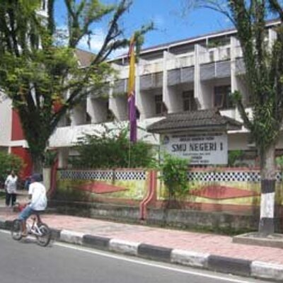

SMA Negeri 1 Ambon, salah satu sekolah menengah atas tertua di Maluku, didirikan pada tahun 1953 atas inisiatif tokoh-tokoh pendidikan seperti Bapak F. CH. Manusama, Bapak M. A. Risakotta, Bapak C.Piete, dan Bapak J. P. Pattikawa. Awalnya, sekolah ini berlokasi di Jalan Pattimura dan merupakan peralihan dari sekolah Belanda, AMS.
Seiring berjalannya waktu, SMA Negeri 1 Ambon mengalami berbagai perubahan. Pada tahun 1957, jumlah jurusan ditambah menjadi tiga, yaitu Bahasa, Ilmu Bumi dan IPA, serta IPS. Namun, pada tahun 1958, sekolah ini terbagi menjadi dua, yaitu SMA Negeri 1 dan 2 Ambon.
Perkembangan pendidikan nasional juga berdampak pada SMA Negeri 1 Ambon. Pada tahun 1965, terjadi perubahan sistem pendidikan dan kurikulum dengan pembagian jurusan yang lebih spesifik. Sekolah ini juga mengalami pergantian kepemimpinan beberapa kali, di antaranya Ibu F. Latumaerissa, Ibu J. M. Siahaya, Ibu H. M. Tamaela, dan saat ini dipimpin oleh Drs. P. Sapulette.
Salah satu peristiwa penting dalam sejarah SMA Negeri 1 Ambon adalah pembangunan gedung baru pada tahun 1983. Namun, karena bencana banjir, gedung sementara yang ditempati sempat rusak parah.